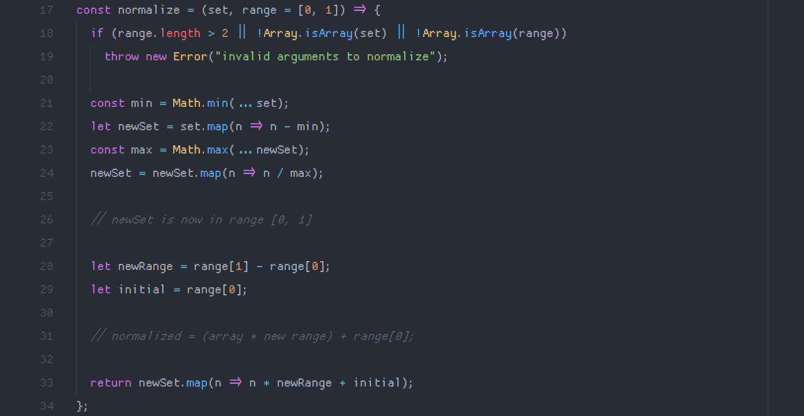

how to normalize an array to a specific range in javascript
I've been working a lot on a piece of software that involves a lot of calculations of and conversions between different number ranges. for example, to convert between one type of hsl color value to another, I'd need to normalize a range for the color's hue from [0, 360] to [0, 1]. so, here's how I did that.
here's the final implementation (from my exstat math library):
the breakdown goes something like this: the first line (const normalize = (set ...) creates a function that takes in two arguments: the set of numbers that needs to be normalized, and the range to normalize to (which defaults to the set [0, 1]).
the next two lines just make sure that the range is only a set of two numbers, and that both arguments are arrays — it throws an error if not.
if (range.length > 2 || !Array.isArray(set) || !Array.isArray(range))
throw new Error("invalid arguments to normalize");
here's where the math goes down. first, we initialize a constant min, which is the smallest number in the set. then, we create a new array from the array of numbers (that is, the set argument) by mapping the original set to a set of each number in the set minus the smallest number in the array. the purpose of this is to create an array where the first index is zero.
then, we get the maximum value from the new array we just made, and map our set (the one starting at zero) to a set of numbers divided by the largest number in the array. this results in an array of numbers ranging from zero to one!
const min = Math.min(...set);
let newSet = set.map(n => n - min);
const max = Math.max(...newSet);
newSet = newSet.map(n => n / max);
the next step is to make sure we're normalizing to the range that we passed in as an argument to the function. first, set a variable to equal the difference between the first and last indices in the range argument. then, set a variable to equal just the first index in the range.
let newRange = range[1] - range[0];
let initial = range[0];
then, we'll just do a little mapping, and return our new array mapped to the correct range by adding newRange and initial together and multiplying everything in our [0, 1] set by that product.
return newSet.map(n => n * newRange + initial);
and there we have it! let's try normalizing a set of numbers to an arbitrary range, say 1, 2, 4, 7, 13, 50, 200 to 0, 10.
normalize([1, 2, 4, 7, 13, 50, 200], [0, 10]) // returns [0, 0.05025125628140704, 0.1507537688442211, 0.3015075376884422, 0.6030150753768844, 2.462311557788945, 10]
nice, working correctly. that's about all there is to it! also, I truncated the numbers in the example above for the sake of space (the numbers actually have a lot more decimal places than that. if you wanted less, instead of returning
newSet.map(n => n * newRange + initial) you'd return newSet.map(n => (n * newRange + initial).toFixed(2)) and pass the amount of decimal places you need into toFixed().
just remember that toFixed() returns a string...
thanks for reading, I'll be back soon. until then, listen to these (if you want!):
currently listening to:
- duello by t+pazolite
- cartoon network
by black dresses
- landscape by florence + the machine - please please watch this music video. it's not the official video, a photographer created it by stitching together over four thousand of their own photos into a stop-motion masterpiece. it's incredible. the song is good too!
- rest in peace, saith the lord by demetori
- samsara
by massive new krew